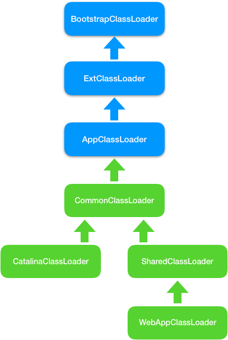

- 00 开篇词 Java程序员如何快速成长？.md
- 01 Web容器学习路径.md
- 02 HTTP协议必知必会.md
- 03 你应该知道的Servlet规范和Servlet容器.md
- 04 实战：纯手工打造和运行一个Servlet.md
- 05 Tomcat系统架构（上）： 连接器是如何设计的？.md
- 06 Tomcat系统架构（下）：聊聊多层容器的设计.md
- 07 Tomcat如何实现一键式启停？.md
- 08 Tomcat的“高层们”都负责做什么？.md
- 09 比较：Jetty架构特点之Connector组件.md
- 10 比较：Jetty架构特点之Handler组件.md
- 11 总结：从Tomcat和Jetty中提炼组件化设计规范.md
- 12 实战：优化并提高Tomcat启动速度.md
- 13 热点问题答疑（1）：如何学习源码？.md
- 14 NioEndpoint组件：Tomcat如何实现非阻塞I_O？.md
- 15 Nio2Endpoint组件：Tomcat如何实现异步I_O？.md
- 16 AprEndpoint组件：Tomcat APR提高I_O性能的秘密.md
- 17 Executor组件：Tomcat如何扩展Java线程池？.md
- 18 新特性：Tomcat如何支持WebSocket？.md
- 19 比较：Jetty的线程策略EatWhatYouKill.md
- 20 总结：Tomcat和Jetty中的对象池技术.md
- 21 总结：Tomcat和Jetty的高性能、高并发之道.md
- 22 热点问题答疑（2）：内核如何阻塞与唤醒进程？.md
- 23 Host容器：Tomcat如何实现热部署和热加载？.md
- 24 Context容器（上）：Tomcat如何打破双亲委托机制？.md
- 25 Context容器（中）：Tomcat如何隔离Web应用？.md
- 26 Context容器（下）：Tomcat如何实现Servlet规范？.md
- 27 新特性：Tomcat如何支持异步Servlet？.md
- 28 新特性：Spring Boot如何使用内嵌式的Tomcat和Jetty？.md
- 29 比较：Jetty如何实现具有上下文信息的责任链？.md
- 30 热点问题答疑（3）：Spring框架中的设计模式.md
- 31 Logger组件：Tomcat的日志框架及实战.md
- 32 Manager组件：Tomcat的Session管理机制解析.md
- 33 Cluster组件：Tomcat的集群通信原理.md
- 34 JVM GC原理及调优的基本思路.md
- 35 如何监控Tomcat的性能？.md
- 36 Tomcat I_O和线程池的并发调优.md
- 37 Tomcat内存溢出的原因分析及调优.md
- 38 Tomcat拒绝连接原因分析及网络优化.md
- 39 Tomcat进程占用CPU过高怎么办？.md
- 40 谈谈Jetty性能调优的思路.md
- 41 热点问题答疑（4）： Tomcat和Jetty有哪些不同？.md
- 特别放送 如何持续保持对学习的兴趣？.md
- 结束语 静下心来，品味经典.md
25 Context容器（中）：Tomcat如何隔离Web应用？
我在专栏上一期提到，Tomcat通过自定义类加载器WebAppClassLoader打破了双亲委托机制，具体来说就是重写了JVM的类加载器ClassLoader的findClass方法和loadClass方法，这样做的目的是优先加载Web应用目录下的类。除此之外，你觉得Tomcat的类加载器还需要完成哪些需求呢？或者说在设计上还需要考虑哪些方面？
我们知道，Tomcat作为Servlet容器，它负责加载我们的Servlet类，此外它还负责加载Servlet所依赖的JAR包。并且Tomcat本身也是一个Java程序，因此它需要加载自己的类和依赖的JAR包。首先让我们思考这一下这几个问题：
- 假如我们在Tomcat中运行了两个Web应用程序，两个Web应用中有同名的Servlet，但是功能不同，Tomcat需要同时加载和管理这两个同名的Servlet类，保证它们不会冲突，因此Web应用之间的类需要隔离。
- 假如两个Web应用都依赖同一个第三方的JAR包，比如Spring，那Spring的JAR包被加载到内存后，Tomcat要保证这两个Web应用能够共享，也就是说Spring的JAR包只被加载一次，否则随着依赖的第三方JAR包增多，JVM的内存会膨胀。
- 跟JVM一样，我们需要隔离Tomcat本身的类和Web应用的类。
在了解了Tomcat的类加载器在设计时要考虑的这些问题以后，今天我们主要来学习一下Tomcat是如何通过设计多层次的类加载器来解决这些问题的。
Tomcat类加载器的层次结构
为了解决这些问题，Tomcat设计了类加载器的层次结构，它们的关系如下图所示。下面我来详细解释为什么要设计这些类加载器，告诉你它们是怎么解决上面这些问题的。

我们先来看第1个问题，假如我们使用JVM默认AppClassLoader来加载Web应用，AppClassLoader只能加载一个Servlet类，在加载第二个同名Servlet类时，AppClassLoader会返回第一个Servlet类的Class实例，这是因为在AppClassLoader看来，同名的Servlet类只被加载一次。
因此Tomcat的解决方案是自定义一个类加载器WebAppClassLoader， 并且给每个Web应用创建一个类加载器实例。我们知道，Context容器组件对应一个Web应用，因此，每个Context容器负责创建和维护一个WebAppClassLoader加载器实例。这背后的原理是，不同的加载器实例加载的类被认为是不同的类，即使它们的类名相同。这就相当于在Java虚拟机内部创建了一个个相互隔离的Java类空间，每一个Web应用都有自己的类空间，Web应用之间通过各自的类加载器互相隔离。
SharedClassLoader
我们再来看第2个问题，本质需求是两个Web应用之间怎么共享库类，并且不能重复加载相同的类。我们知道，在双亲委托机制里，各个子加载器都可以通过父加载器去加载类，那么把需要共享的类放到父加载器的加载路径下不就行了吗，应用程序也正是通过这种方式共享JRE的核心类。因此Tomcat的设计者又加了一个类加载器SharedClassLoader，作为WebAppClassLoader的父加载器，专门来加载Web应用之间共享的类。如果WebAppClassLoader自己没有加载到某个类，就会委托父加载器SharedClassLoader去加载这个类，SharedClassLoader会在指定目录下加载共享类，之后返回给WebAppClassLoader，这样共享的问题就解决了。
CatalinaClassLoader
我们来看第3个问题，如何隔离Tomcat本身的类和Web应用的类？我们知道，要共享可以通过父子关系，要隔离那就需要兄弟关系了。兄弟关系就是指两个类加载器是平行的，它们可能拥有同一个父加载器，但是两个兄弟类加载器加载的类是隔离的。基于此Tomcat又设计一个类加载器CatalinaClassLoader，专门来加载Tomcat自身的类。这样设计有个问题，那Tomcat和各Web应用之间需要共享一些类时该怎么办呢？
CommonClassLoader
老办法，还是再增加一个CommonClassLoader，作为CatalinaClassLoader和SharedClassLoader的父加载器。CommonClassLoader能加载的类都可以被CatalinaClassLoader和SharedClassLoader 使用，而CatalinaClassLoader和SharedClassLoader能加载的类则与对方相互隔离。WebAppClassLoader可以使用SharedClassLoader加载到的类，但各个WebAppClassLoader实例之间相互隔离。
Spring的加载问题
在JVM的实现中有一条隐含的规则，默认情况下，如果一个类由类加载器A加载，那么这个类的依赖类也是由相同的类加载器加载。比如Spring作为一个Bean工厂，它需要创建业务类的实例，并且在创建业务类实例之前需要加载这些类。Spring是通过调用Class.forName来加载业务类的，我们来看一下forName的源码：
public static Class<?> forName(String className) {
Class<?> caller = Reflection.getCallerClass();
return forName0(className, true, ClassLoader.getClassLoader(caller), caller);
}
可以看到在forName的函数里，会用调用者也就是Spring的加载器去加载业务类。
我在前面提到，Web应用之间共享的JAR包可以交给SharedClassLoader来加载，从而避免重复加载。Spring作为共享的第三方JAR包，它本身是由SharedClassLoader来加载的，Spring又要去加载业务类，按照前面那条规则，加载Spring的类加载器也会用来加载业务类，但是业务类在Web应用目录下，不在SharedClassLoader的加载路径下，这该怎么办呢？
于是线程上下文加载器登场了，它其实是一种类加载器传递机制。为什么叫作“线程上下文加载器”呢，因为这个类加载器保存在线程私有数据里，只要是同一个线程，一旦设置了线程上下文加载器，在线程后续执行过程中就能把这个类加载器取出来用。因此Tomcat为每个Web应用创建一个WebAppClassLoader类加载器，并在启动Web应用的线程里设置线程上下文加载器，这样Spring在启动时就将线程上下文加载器取出来，用来加载Bean。Spring取线程上下文加载的代码如下：
cl = Thread.currentThread().getContextClassLoader();
本期精华
今天我介绍了JVM的类加载器原理并剖析了源码，以及Tomcat的类加载器的设计。重点需要你理解的是，Tomcat的Context组件为每个Web应用创建一个WebAppClassLoader类加载器，由于不同类加载器实例加载的类是互相隔离的，因此达到了隔离Web应用的目的，同时通过CommonClassLoader等父加载器来共享第三方JAR包。而共享的第三方JAR包怎么加载特定Web应用的类呢？可以通过设置线程上下文加载器来解决。而作为Java程序员，我们应该牢记的是：
- 每个Web应用自己的Java类文件和依赖的JAR包，分别放在
WEB-INF/classes和WEB-INF/lib目录下面。 - 多个应用共享的Java类文件和JAR包，分别放在Web容器指定的共享目录下。
- 当出现ClassNotFound错误时，应该检查你的类加载器是否正确。
线程上下文加载器不仅仅可以用在Tomcat和Spring类加载的场景里，核心框架类需要加载具体实现类时都可以用到它，比如我们熟悉的JDBC就是通过上下文类加载器来加载不同的数据库驱动的，感兴趣的话可以深入了解一下。
课后思考
在StandardContext的启动方法里，会将当前线程的上下文加载器设置为WebAppClassLoader。
originalClassLoader = Thread.currentThread().getContextClassLoader();
Thread.currentThread().setContextClassLoader(webApplicationClassLoader);
在启动方法结束的时候，还会恢复线程的上下文加载器：
Thread.currentThread().setContextClassLoader(originalClassLoader);
这是为什么呢？
不知道今天的内容你消化得如何？如果还有疑问，请大胆的在留言区提问，也欢迎你把你的课后思考和心得记录下来，与我和其他同学一起讨论。如果你觉得今天有所收获，欢迎你把它分享给你的朋友。
© 2019 - 2023 Liangliang Lee. Powered by gin and hexo-theme-book.